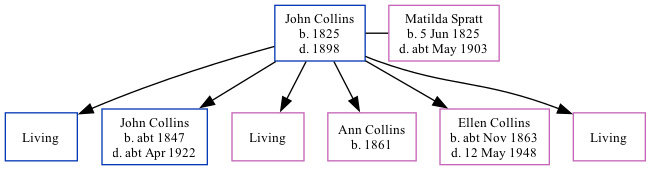

John Collins 1825 - 1898
[ Home ] | [ Calendar ] | [ Surnames Index ] | [ Family History ], John Collins, the husband of Matilda Spratt (the three times great-aunt of Nigel Horne), was born in Chislet, Kent, England in 18251,2,3,4,5,6 and married Matilda (with whom he had 6 children: William, John Elgar, Elizabeth Sarah, Ann, Ellen Jane and Ada Louisa, along with 3 surviving children) in St Nicholas-at-Wade, Kent, England on Nov 30, 18447.
Throughout his life, John lived in several places: at his birthplace in 18511; at Reynolds Farm in Chislet on Mar 30, 18518; in Minster, Thanet, Kent in 18612; on Prospect Road, Minster, Thanet, Kent on Apr 7, 18613; in Birchington, Kent in 18714; at Cottage, Birchington, Kent on Apr 2, 18719; in Alkham, Kent in 18815 and in 18916; and at Everden, Alkham, Kent on Apr 5, 189110.
He died in 1898.
Children
- John Elgar was born c. 1847
- Ann was born in 1861
- Ellen Jane was born c. Nov 1863
Citations
- 1851 England Census Online publication - Provo, UT, USA: The Generations Network, Inc., 2005.Original data - Census Returns of England and Wales, 1851. Kew, Surrey, England: The National Archives of the UK (TNA): Public Record Office (PRO), 1851. Data imaged from the National
- 1861 England Census Online publication - Provo, UT, USA: The Generations Network, Inc., 2005.Original data - Census Returns of England and Wales, 1861. Kew, Surrey, England: The National Archives of the UK (TNA): Public Record Office (PRO), 1861. Data imaged from the National
- 1861 England, Wales & Scotland Census - Findmypast (was age 36 and the head of the household)
- 1871 England Census Online publication - Provo, UT, USA: The Generations Network, Inc., 2004.Original data - Census Returns of England and Wales, 1871. Kew, Surrey, England: The National Archives of the UK (TNA): Public Record Office (PRO), 1871. Data imaged from the National
- 1881 England Census Online publication - Provo, UT, USA: The Generations Network, Inc., 2004. 1881 British Isles Census Index provided by The Church of Jesus Christ of Latter-day Saints © Copyright 1999 Intellectual Reserve, Inc. All rights reserved. All use is subject to the
- 1891 England Census Online publication - Provo, UT, USA: The Generations Network, Inc., 2005.Original data - Census Returns of England and Wales, 1891. Kew, Surrey, England: The National Archives of the UK (TNA): Public Record Office (PRO), 1891. Data imaged from The National
- England & Wales, FreeBMD Marriage Index: 1837-1915 Online publication - Provo, UT, USA: The Generations Network, Inc., 2006.Original data - General Register Office. England and Wales Civil Registration Indexes. London, England: General Register Office. © Crown copyright. Published by permission of the Cont
- 1851 England, Wales & Scotland Census - Findmypast (was age 26 and the head of the household)
- 1871 England, Wales & Scotland Census - Findmypast (was age 45 and the head of the household)
- 1891 England, Wales & Scotland Census - Findmypast (was age 64 and the head of the household)
Family Tree
Generated by Ged2Site. Last updated on Jul 20, 2025